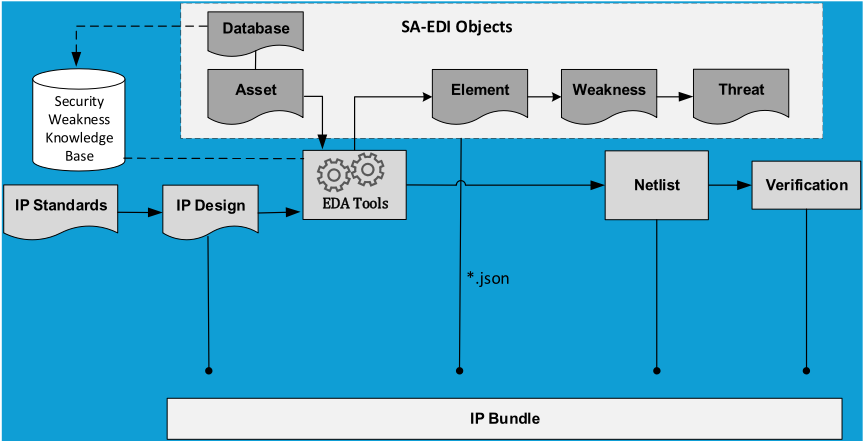
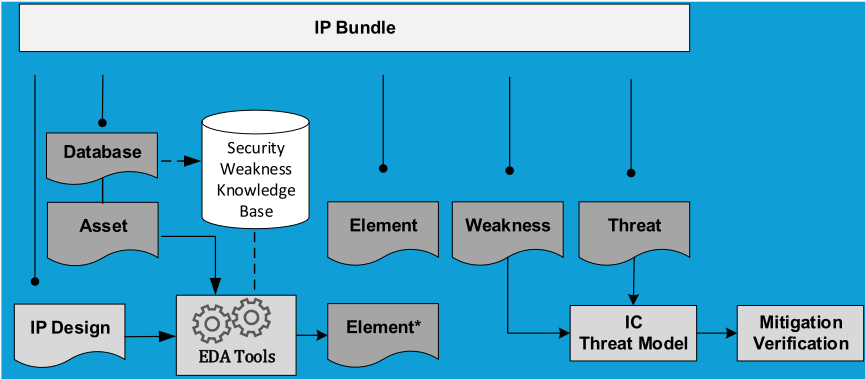

面向 SoC 安全设计的威胁建模：IEEE P3164 SA-EDI 标准化
论文介绍 IEEE P3164 SA-EDI（Security Annotation for Electronic Design Integration）标准在 SoC 安全威胁建模上的最新进展，目标是在 IP 提供方、IP 集成方与 EDA 工具厂商之间建立统一、可互操作的安全设计流程。针对攻击面扩大、供应链攻击、AI/ML 威胁与后量子密码（PQC）等新兴风险，标准定义了轻量级 JSON 数据建模框架，仅含 Database、Asset、Element、Weakness、Threat 共 5 类数据对象，打包为单一 JSON 文件随 IP Bundle 交付，并规定如何将安全数据对象绑定到 RTL 以实现自动化与可验证。标准兼容 STRIDE、PASTA、Attack Trees 等既有威胁建模框架，并与 MITRE 合作以其硬件 CWE 列表作为案例研究。关键结论是：该开放标准通过统一数据格式与明确的 IP 提供方/集成方接口边界实现安全 collateral 的互操作复用；未来将制定安全工具与自动化规范，并组建 taskforce 以 case-study 演示基于 JSON 安全 collateral 的安全验证自动化。
SoC 高集成度扩大了攻击面，供应链攻击、AI/ML 威胁、后量子密码（PQC）、固件漏洞与架构/物理攻击等新兴威胁使安全从功能集转变为首要设计需求；现有威胁建模框架（STRIDE、PASTA、Attack Trees）面向通用计算机/信息系统，Intel 等厂商的 SoC 威胁建模为内部流程，行业缺乏一个覆盖 IP 提供方、IP 集成方与 EDA 厂商、可互操作的 SoC 安全标注与威胁建模标准化框架。
提出 IEEE P3164 SA-EDI 开放标准：定义仅 5 类数据对象（Database、Asset、Element、Weakness、Threat）的轻量级 JSON 数据建模框架，用于识别 module/ASIC IP 中的安全资产；收集的安全数据对象打包为单一 JSON 文件并随 IP Bundle 交付以保证可移植与互操作；标准明确 IP 提供方与集成方的边界和接口，并规定如何将安全数据对象绑定到 RTL 使其自动化、可验证；允许在统一高层接口规范下复用多种开源/专有威胁建模框架与知识库（如 MITRE 硬件 CWE），并通过 Weakness/Threat 数据对象构建威胁模型，给出逐步明确 IP 提供方/集成方职责的威胁建模工作流（Table 5，仅列必需步骤）。
未在论文中说明
区别于 STRIDE、PASTA、Attack Trees 等通用框架和 Intel 等厂商的内部 SoC 威胁建模流程，SA-EDI 是面向 SoC 设计与制造全流程参与方的开放标准，在 IP 提供方、IP 集成方与 EDA 工具厂商之间标准化统一的安全数据对象格式（JSON）与接口边界，使各类威胁建模框架可在其高层接口规范下被复用与标注；相比 DVCon 2024 早期版本仅聚焦 Asset Identification，本版细化了 asset/threat 数据对象、不同集成层级下威胁模型的统一创建方法学，以及绑定 RTL 的自动化与可验证路径。
相关度级别：medium
命中能力域：2.7 EDA/验证自动化与 AI 辅助
理由：团队作为存储/互连 IP（LPDDR、HBM4、UCIe 等）的提供方，正是 SA-EDI 标准明确约束的 'IP provider' 角色：标准要求 IP Bundle 中附带统一 JSON 格式的安全 collateral（Asset/Weakness/Threat 等数据对象）并绑定 RTL，未来可能成为 IP 交付清单的新增项；标准面向 shift-left 的安全验证自动化与 EDA 工具链规范，并提到可被 AI/ML 工具利用，与 2.7 的验证流程自动化/框架方向存在框架级关联。但论文是标准化进展综述，未涉及 UVM/覆盖率/Emulation 等 2.4 的具体验证平台技术，安全威胁建模也不是团队存储/互连 IP 的核心技术栈，且无量化结果与工具实现，故评为 medium 而非 high。
建议动作：作为方法参考存档
Wenzhen Li，IEEE P3164 工作组
摘要——片上系统（SoC）安全设计的重要性众所周知。对SoC而言，安全设计与威胁建模是构建弹性系统的集成化、主动式流程，以便在产品部署之前预判并缓解攻击。威胁建模系统地识别漏洞，而安全设计原则与特性则贯穿芯片整个生命周期加以实施，以应对这些漏洞。在本文中，我们介绍了IEEE P3164在电子设计集成安全标注（SA-EDI）标准化方面的最新进展，该标准为威胁建模提供了一系列规范，以促进SoC安全设计与集成，从而顺应安全威胁格局与SoC架构领域的新兴趋势。
片上系统（System-on-Chip, SoC）架构已成为现代计算平台的基础，其部署遍及移动设备、汽车系统、工业自动化以及边缘/云计算。SoC 能够将 CPU、GPU、加速器和存储器子系统等异构组件高度集成于单颗芯片之上。这种集成在提升性能与效率的同时，也扩大了攻击面，使紧密耦合的硬件与软件子系统暴露于日益复杂的威胁之下。此外，无处不在的物联网（IoT）部署的兴起、向 5G 网络的过渡，以及对人工智能（AI）驱动工作负载的依赖，为数据机密性、完整性和系统弹性提出了前所未有的要求。与此同时，AI 的融入与量子计算的兴起也带来了挑战传统安全模型的新风险。因此，SoC 安全已从一组功能特性转变为首要设计需求，需要采用将威胁建模与安全 SoC 设计相融合的系统化方法。
针对 SoC 的威胁建模采用一种结构化流程来分析系统架构并识别潜在的安全缺陷。该流程通常包括以下步骤：
所有这些现有的威胁建模框架都提供了有助于推理和发现系统威胁的方案；或提供了用于对齐业务目标与技术需求的特定多步骤方法论与流程；甚至提供了展示资产可能如何遭受攻击的概念图。它们通常适用于计算机与信息系统，也可以扩展到 SoC 领域。更相关的是，例如 Intel 的 SoC 威胁建模就是一种面向 SoC 安全设计的特定内部工作流程与框架。
如今，半导体产业高度依赖供应链。攻击者正日益将半导体供应链作为攻击目标，利用对第三方组件和电子设计自动化（EDA）工具链日益增长的依赖。在这一新兴的SoC安全格局下，IEEE P3164 SA-EDI标准化工作致力于构建一个整体性的、可互操作的高层框架，并为参与SoC设计与制造的各方引入以安全为中心的设计流程及相关规范。该框架通过为IP提供商、IP集成商和EDA厂商标准化统一的安全设计工作流程，助力构建可互兼容的SoC安全设计生态系统。IEEE P3164 SA-EDI是一项开放标准，它明确规定了IP提供商与IP集成商的边界和接口。在该特定边界内，所有开源或专有的威胁建模与工作流程均可被复用和标注。该标准还定义了丰富的资产与威胁数据对象，EDA厂商可利用这些数据对象开发面向SoC安全设计与验证自动化的工具链。该标准还可供人工智能（AI）与机器学习（ML）工具用于复杂的电路/系统分析，以识别并暴露可能规避传统安全措施的潜在威胁。
在DVCON 2024 [2]上，Miltos对IEEE P3164及SA-EDI标准进行了详细介绍，当时该标准尚处于起步阶段，主要聚焦于对SoC中所使用的内部或第三方IP的安全保障（Security Assurance）配套材料进行资产识别（Asset Identification）[3]。此后，IEEE P3164工作组进一步完善了该标准，规定了资产与威胁的数据对象以及IP提供商与集成商的接口。该标准还为在SoC安全设计的不同集成层级上创建威胁模型提供了统一的方法论、框架与工作流程。具体的威胁模型可通过审查Weakness（弱点）与Threat（威胁）数据对象来创建。所创建的模型应由集成商进行分析与验证，以实现安全的SoC设计。
本文的组织结构如下。第I节介绍用于保障SoC设计安全的威胁建模，并概述IEEE P3164 SA-EDI标准为顺应安全威胁格局与SoC架构领域新趋势而具备的独特特性。第II节全面呈现SoC安全设计中新兴的威胁与漏洞。第III节给出专门面向SoC安全设计的威胁建模框架与工作流程。IEEE P3164标准在面向SoC安全的威胁建模方面的进展详情在第IV节中介绍。最后一节总结SoC安全设计的新趋势以及IEEE P3164 SA-EDI标准的未来工作。
片上系统（SoC）安全面临的新兴威胁与漏洞，源于日益增加的复杂度、对供应链的依赖以及先进的黑客技术。人工智能（AI）的融入与量子计算的兴起也带来了挑战传统安全模型的新风险。
供应链入侵：攻击者日益将半导体供应链作为攻击目标，利用对第三方元件与代工服务日益增长的依赖。
AI 与机器学习（ML）威胁：将 AI 集成到面向物联网（IoT）与边缘计算等应用的 SoC 中，引入了一系列新的漏洞。
后量子密码学（PQC）挑战：量子计算机的到来对现有密码学标准构成长期威胁。
固件与软件漏洞利用：固件与软件漏洞虽非新问题，但仍在持续演变，尤其是随着物联网在个人/家庭、社区与工业领域的普及。
架构与物理攻击：高级攻击持续寻找绕过传统保护机制的方法。
计算机系统中广泛部署的三种威胁建模框架是 STRIDE、PASTA 和攻击树（Attack Trees）。所有这些框架的详细信息入口可参见 [12]。STRIDE [5] 是由微软（Microsoft）开发的一种用于识别计算机安全威胁的模型。它将安全威胁分为六类。STRIDE 用于帮助推理并发现系统中的威胁。它与可并行构建的目标系统模型结合使用。这包括对进程、数据存储、数据流和信任边界的完整分解。PASTA [6] 是一种以风险为中心的方法论。它提供了一个七步流程，用于在兼顾合规问题和业务分析的同时，对齐业务目标与技术需求。该方法的意图是提供一个动态的威胁识别、枚举与评分流程。威胁模型完成后，安全领域专家会对已识别的威胁进行详细分析。最后，即可枚举出适当的安全控制措施。该方法论旨在提供一种以攻击者为中心的应用程序与基础设施视角，防御者可据此制定以资产为中心的缓解策略。攻击树 [7] 是一种概念图，用于展示某个资产或目标可能如何受到攻击。攻击树已被应用于多种场景。
考虑到 SoC 设计硬件安全领域的新趋势，即芯粒（chip-let）架构的模块化、使用中数据（data in use）的硬件级保护以及 AI/ML 硬件加速等，所有这些模型都可以扩展到 SoC 安全设计中。在表 1 中，我们专门针对 SoC 安全使用场景对这些框架进行了比较。
| Framework | Core Focus | SoC-Specific Application | Best Used When |
|---|---|---|---|
| STRIDE | General application security: S poofing, T ampering, R epudiation, I nformation disclosure, D enial of service, E levation of privilege. | Useful for modeling threats related to data flows and interfaces, such as firmware updates and communication protocols. | Starting the threat modeling process for a new feature or component. |
| PASTA | Risk-centric, attacker-focused methodology spanning seven stages. Integrates business objectives with technical analysis. | Provides a strategic, high-level view of how business and technical risks intersect in an SoC design, considering attacker motivation. | Integrating threat modeling into a broader risk management strategy. |
| MITRE ATT&CK | Real-world adversary tactics and techniques. Offers a detailed, behavior-focused view. | Mapped to the specific TTPs (Tactics, Techniques and Procedures) used to exploit firmware, devices, and systems controlled by a SoC. | Conducting a deep, intelligence-driven analysis of adversary behavior. |
| MITRE EMB3D | Critical infrastructure and embedded systems, building on ATT&CK. | Identifies threats specific to the unique hardware, software, and physical interfaces of embedded systems. | Designing an SoC for critical infrastructure, where the system itself is a high-value target. |
| Attack Trees | Visual, goal-oriented representation of attack paths. | Used to model multi-stage physical and logical attacks, such as combining a software vulnerability with a side-channel attack. | Analyzing specific, high-risk attack scenarios in detail. |
| Framework | Core Focus | SoC-Specific Application | Best Used When |
IEEE P3164 工作组与 MITRE 密切合作（表 1 中的第 3 行和第 4 行），后者的硬件 CWE（通用缺陷枚举，Common Weakness Enumeration）列表 [8] 正被用作 SA-EDI 标准开发的案例研究示例。同时需要指出的是，IEEE P3164 SA-EDI 是一个开放标准，表 1 中的所有威胁建模框架或其他框架都可以在其高层次、定义完善的接口规范框架之下被轻松采用。
值得注意的是，英特尔的 SoC 威胁建模是一套专门用于保护 SoC 设计的内部工作流程与框架。除软件开发之外，他们还针对硬件、固件和平台开发的特定需求对该框架进行了定制。在该威胁建模框架下，对手模型（或称威胁模型，二者在本文中可互换使用）是指对手为实现其目标而采用的具体攻击战术/技术以及具体行为。英特尔已开发出 9 种对手模型，如表 2 所示。此外，英特尔还采用了一系列开源及内部安全工具，以大规模识别漏洞，并帮助确保第三方/开源软件满足安全要求 [11]。
| Adversary | Description |
|---|---|
| Unprivileged Software Adversary | Typically known as a 'user-space' adversary; capabilities are limited by the instruction set architecture (ISA), or the hardware platform (x86/x64 or IA-32/Intel 64), or the capabilities granted by the system software. |
| System Software Adversary | Full control over the operating system, or virtual machine monitor. This adversary can manipulate x86/x64 in any manner allowed by the instruction set architecture specification. |
| Startup code and SMM Adversary | All capabilities of the System Software Adversary, as well as control over initial boot code and system management mode. This adversary can manipulate x86/x64 in any manner allowed by the instruction set architecture specification. This adversary also has the ability to compromise system and platform firmware. |
| Network Adversary | Access to and may have control over various network fabrics that are used to connect the platform to other platforms, intranet, or extranet resources. This adversary can also interact with remote systems through predefined APIs. |
| Software Side Channel Adversary | Able to gather statistics from the CPU regarding execution and may be able to use them to extract secrets from software being executed. This adversary can also observe hardware resource usage to infer information and secrets from software being executed. This adversary can often directly influence resource usage (e.g., by causing contention) or by modulating an input to a victim program. |
| Simple Hardware Adversary | Physical access to the system, which typically doesn't require expensive equipment or extraordinary training/specialty. |
| Skilled Hardware Adversary | Physical access to the system and additional equipment and/or training that isn't accessible to the average individual consumer. |
| Hardware Reverse Engineer Adversary | Physical access to the system, specialized tooling (which can be rented), and highly specialized expertise. |
| Authorized Adversary | Intel or partner-granted authority that has capabilities not available to unauthorized entities. This may include access to manufacturing facilities and systems, access to design facilities and systems, or access to devices that haven't completed all manufacturing steps. |
| Adversary | Description |

IV. IEEE P3164 SA-EDI 威胁建模框架标准化
IEEE P3164 SA-EDI 标准正是在以下背景下形成的：
IEEE P3164 SA-EDI 标准规定了一种基于 JSON 的数据建模框架，用于识别模块/ASIC IP 中的安全资产。该标准通过开源或专有工具收集所有与安全关注相关的数据对象，以实现安全目标。此外，该标准还规定了如何将这些安全数据对象绑定到 RTL 上，并使其实现自动化和可验证。IEEE P3164 标准为通用 SoC 或子系统集成流程中的 IP 提供方、IP 集成方和 EDA 工具供应商开发了一套安全标注方法学，如图 1 所示。

SA-EDI 是一个轻量级标准，仅定义了 5 种数据对象类型：数据库数据对象（Database Data Object）、资产数据对象（Asset Data Object）、元素数据对象（Element Data Object）、弱点数据对象（Weakness Data Object）和威胁数据对象（Threat Data Object）。所收集的符合 SA-EDI 标准的数据对象被打包为单个 JSON 文件，并包含在所发布的 IP Bundle 中。这种统一格式使其在互操作性与兼容性方面具有高度可移植性。还应当指出的是，元素对象（Element objects）可以在不使用 EDA 工具的情况下手动创建。
| Attribute | Required | Type | Definition |
|---|---|---|---|
| Weakness Name | Yes | String | Unique identifier of the weakness for Asset Name . The Weakness Name need not be unique across multiple assets. |
| Description | Yes | String | Details about the weakness and how the security objective may be compromised |
| Asset Name | Yes | String | Reference to the attribute Asset Name |
| Security Objective | Yes | Array of Strings | Reference to attribute Security Objective . |
| Side- Channel | Yes | Enumeration | Indicates if this data object captures a side-channel weakness: 1. Yes 2. No |
| Attack Points | No | Array of Strings | Ports listed are associated with this security objective and the security weakness of this object |
| Condition | No | String | Reference to the attribute Condition . |
| Security Weakness Reference | No | Array of Strings | Reference to attribute Security Weaknesses . |
| Recommend ation | No | Array of Strings | Additional information that the integrator needs to be aware of, such as mitigations, configuration settings, etc. |
| Attribute | Required | Type | Definition |
SA-EDI 威胁建模框架如图 2 所示。安全标注（security annotation）包括表示安全资产、数据库条目、元素、弱点（或攻击点）、威胁（对手）以及安全目标的数据对象，其中安全目标提供了缓解已识别威胁的意图。资产（Asset）数据对象标识特定子系统内的敏感（或关键）材料。它们还与安全弱点知识库（Security Weakness Knowledge Base）中的数据对象相关联，并且是创建相应元素（Element）数据对象的 EDA 工具的输入。标记为"Security Weakness Knowledge Base"的数据库包含业界经验和/或安全研究人员所已知的安全弱点，如第 III 节所述。该标准允许使用来自多个来源的多个数据库，例如 MITRE [8]。元素数据对象包含影响和/或观察资产行为的端口和参数，并包括与该资产相关联的潜在安全弱点。元素数据对象用于创建表 3 中的弱点（Weakness）数据对象。弱点数据对象通过定义来自元素对象的端口和/或参数，将潜在安全问题与资产相关联。弱点数据对象基于作为独立组件的 IP（子系统）的架构与设计。此外，IP 所有者还可以基于该模块在集成式 SoC 系统中的潜在用例来创建弱点对象。
威胁（Threat）数据对象用于捕获关于弱点对象中某一弱点的特定利用方式的详细信息。一个弱点对象可能与多个威胁对象相关联，因为利用同一弱点可能存在多种方式。威胁数据对象的属性列于表 4 中。弱点和威胁数据对象包含对手（威胁）模型所需的信息。集成商将使用这些对象来帮助创建 IP/SoC 的威胁模型。集成商还可以创建特定于 IP 的额外弱点和威胁对象，具体取决于哪些用例在范围之内。
表 5 逐步阐述了基本的 SA-EDI 娄胁建模工作流程，该流程就 SA-EDI 威胁建模规定了 IP 提供商和集成商双方的职责与期望。其目的在于逐步说明由哪一方负责创建安全保证配套材料（security assurance collateral）以及输出应当是什么。此处表 5 中仅展示了必需的步骤。可选步骤在 SA-EDI 标准 [4] 中有详细阐述。
| Attribute | Required | Type | Definition |
|---|---|---|---|
| Threat Name | Yes | String | Unique identifier of the threat |
| Weakness Name | Yes | String | Reference to the attribute Weakness Name |
| Asset Name | Yes | String | Reference to the attribute Asset Name |
| Adversary | Yes | Array of Strings | The agent/attacker that can perform the technique detailed in the Technique attribute |
| Technique | Yes | String | Details about the attack itself such as actions required, equipment needed. |
| Mitigation | No | Array of Strings | Details the IC protection mechanism(s) that defends against the threat |
| Mitigation Verification | No | Array of Strings | Details how to verify the mitigation(s) described in the Mitigation attribute |
| Attribute | Required | Type | Definition |
SoC 设计硬件安全领域的主要新趋势包括芯粒（chiplet）架构的模块化、采用具备增强安全特性的开源 RISC-V，以及物理不可克隆函数（PUF）的使用。此外，通过面向使用中数据（data in use）的机密计算（confidential computing），硬件级保护正在不断加强；与此同时，人工智能（AI）和机器学习（ML）既被用于防御攻击，也被用于实施新型攻击。
一方面，开源 RISC-V 和 PUF 有助于提升 SoC 设计的安全性。例如，PUF 为设备提供一个唯一的、不可伪造的身份，可抵御克隆和逆向工程。由 PUF 派生的密码学密钥从不存储在永久性存储器中，并且在断电时即被销毁，从而对攻击者而言是“隐形”的。机密计算侧重于保护应用程序正在主动使用的数据。通过在基于硬件的可信执行环境（TEE）中对敏感数据进行隔离和加密，机密计算确保数据始终免受未经授权的访问，即使访问者来自其他软件、操作系统或特权管理员。
另一方面，一些新趋势也给 SoC 安全设计带来了更多挑战。例如，芯粒架构要求对安全模型进行重新评估。与传统的单片（monolithic）SoC 相比，确保来自不同供应商的多个芯粒之间的可信执行和安全通信要复杂得多。因此，基于芯粒架构的安全性如今已成为一项根本性的设计考量，需要采取强有力的措施来保护在组件之间流动的数据。
AI 和 ML 对于 SoC 安全而言是一把双刃剑。它们既被用于增强安全特性，同时也引入了新的攻击向量。AI 和 ML 可用于实时威胁检测，识别并缓解那些能够规避传统安全措施的复杂攻击。新的硬件级对抗性攻击正在涌现，例如利用硬件漏洞来攻陷 AI 系统的侧信道攻击。攻击者还可能利用 AI 来加速攻击并逃避检测。
SA-EDI 标准的持续关注点是满足能够抵御新型攻击的安全 AI 硬件加速器的新发展与新需求，并利用 AI 创建更健壮、具备自我防御能力的安全解决方案。例如，Intel vPro 硬件中的高级安全特性 [10] 就是一个极佳的示例，操作系统（OS）和安全软件特性可以跨系统攻击面利用这些特性，以优化针对网络威胁的缓解措施。该示例通过 Microsoft Windows 11 中 Defender 与 CrowdStrike Falcon 的相关能力展示了硬件特性的实际应用，帮助防御者理解这些集成能力如何有助于缓解 MITRE ATT&CK [13] 中所描述的真实世界攻击者行为。当然，SA-EDI 标准化除了 Intel 的 x86 CPU 之外，还应当兼容 ARM 和 RISC-V 等所有 CPU 架构。
SA-EDI 标准化的未来工作还包括为安全相关的工具与自动化制定一系列规范，并以安全设计与验证/确认的左移（shift-left）为目标。该标准将为 IP 提供商、IP 集成商和 EDA 工具厂商提供清晰且易于遵循的接口，以便在设计阶段早期实施集成的持续流程，确保使用先进工具对安全测试场景进行建模，从而保证硬件的完整性。因此，IEEE P3164 标准工作组正在组建一个特别工作组（taskforce），以创建关于攻击者模型的补充材料。该任务可能会开发一个案例研究，演示 EDA 厂商如何利用特定已发布 IP 捆绑包（IP-bundle）中 JSON 文件所包含的安全配套材料（security collaterals），通过相关 EDA 工具链实现安全验证自动化，从而将 SA-EDI 标准具体化。
| Step# | Owner | Required | Details | Output |
|---|---|---|---|---|
| 1 | IP provider | No | Identify a database of known weaknesses and create a Database object(s). | Database Data Object |
| 2 | IP provider | Yes | Identify asset(s) in the IP and create an Asset object(s) for each asset. | Asset Data Object |
| 3 | IP provider | Yes | Using the output of steps #1 and #2, generate the Element object(s) using an EDA tool. This step may also be done manually. | Element Data Object |
| 4 | IP provider | Yes | Using the output of step #3, create a Weakness object(s). | Table 3. Weakness Data Object |
| 5 | IP provider | No | Using the output of step #4, create a Threat object(s). | Table 4. Threat Data Object |
| 6 | IP provider | Yes | Bundle all the data objects created in steps #1-5 into the IP delivery package (i.e., IP bundle). | IP Bundle |
| 7 | Integrator | Yes | Using the output of step #6, determine which Weakness objects are in scope for the IC's threat model. | IC Threat Model |
| 8 | Integrator | Yes | Using the IC Threat Model, verify the security objectives are met by the mitigations in the design | Mitigation Verification |
| Step# | Owner | Required | Details | Output |